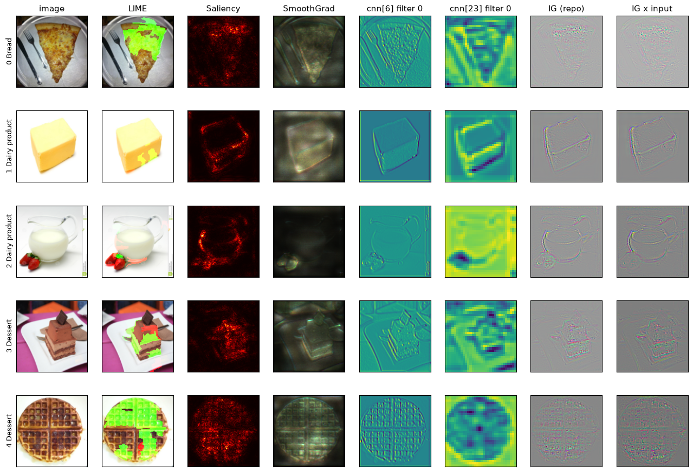
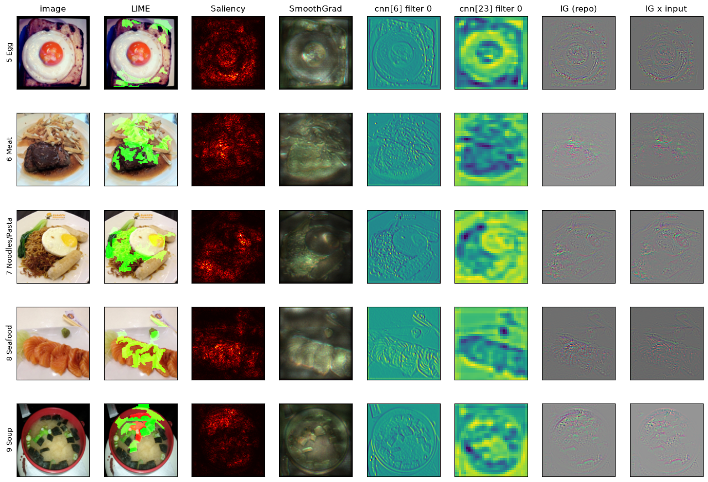
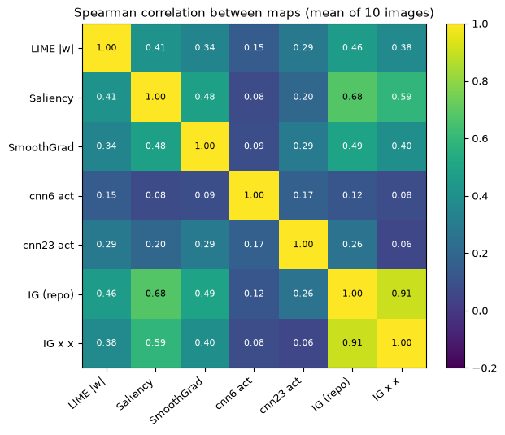
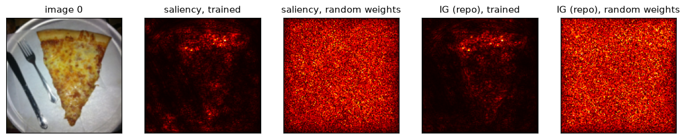

8.1 起點：同一張圖，五種畫法
前面各章的圖都是一種方法一張：lime.png（第 2 章）、saliency.png 與 smoothgrad.png（第 3 章）、filter_cnn6.png 與 filter_cnn23.png（第 4 章）、integrated_gradients.png（第 5 章）。本書另外寫了一支量測程式，對同樣 10 張圖把五種方法各算一次，排成一列：

explain_cnn.py 的畫法；最後一欄 IG x input 是本書加的論文版 IG）。
八欄的來源與畫法（本章的表格與內文把最後兩欄簡寫成 IG repo 與 IG×x；圖 8.4 的標籤寫成 IG (repo)、IG x x，是同兩個東西）：
- LIME：照原程式（
np.random.seed(16)在迴圈外設一次、10 張依序跑、logits、start_label=1、同樣的get_image_and_mask參數）。本書核對過圖 0 的前 3 名和第 2 章相同，所以這一欄就是lime.png的內容。 - Saliency：直接呼叫
compute_saliency_maps（10 張一批），就是saliency.png；二維、plt.cm.hot。 - SmoothGrad：呼叫
smooth_grad(…, 500, 0.4)，迴圈前設torch.manual_seed(0)一次。explain_cnn.py本身沒有固定 PyTorch 的種子（第 0 章 0.6 節），所以這一欄和smoothgrad.png用的不是同一批雜訊，數值不能逐位對照；三通道當 RGB 畫。 - cnn[6]、cnn[23] filter 0：只做第 4 章的第一步 filter activation（hook 抓第 0 個 filter 的輸出，一次 forward），用預設的 viridis 畫。不做第二步 filter visualization，因為優化出來的圖回答的是「什麼樣的圖讓這個 filter 興奮」，不是「這張圖的哪裡」，不能和其他四種比。
- IG (repo)：呼叫
IntegratedGradients(model).generate_integrated_gradients(…, 10)，就是第 5 章的「路徑平均梯度」；IG x input 再乘上 x，是論文的 IG（第 5 章 5.4 節）。兩欄都三通道 normalize 後當 RGB 畫。
看得到的（逐欄）：
- LIME：只有幾塊 superpixel 上了綠（正）或紅（負），其餘是原圖。綠色大多落在食物上：圖 0 披薩上半部、圖 4 鬆餅大半、圖 6 肉與上方配菜、圖 7 麵與左側青菜、圖 8 鮭魚片中段；圖 1 只有奶油塊右下角兩小塊；圖 2 綠色只在草莓一小塊，壺底有一塊橘紅；圖 3 巧克力片附近有紅；圖 9 碗的上緣有紅、海帶有綠。
- Saliency：黑底，紅黃亮點沿著物體輪廓與紋理：圖 1 奶油塊方框、圖 2 牛奶壺弧線與草莓、圖 5 荷包蛋圓圈；圖 4、6、9 的亮點散在整片食物上。
- SmoothGrad：暗、偏灰綠的半透明影像，食物輪廓與紋理可辨（鬆餅格子、荷包蛋圓、湯碗圓）；圖 2 幾乎全黑，只有草莓較亮。
- cnn[6] filter 0：像整張圖的浮雕或邊緣圖，背景也有：圖 0 的刀叉與盤緣、圖 1 的外框、圖 8 的筷子都一樣清楚，和類別無關。
- cnn[23] filter 0：32×32 的粗格子，看得出物體的大形狀（圖 2 草莓是一塊深色、圖 5 蛋黃的圓圈），細節沒了。
- IG (repo) 與 IG x input：灰底、沿輪廓的彩色細紋，兩欄幾乎分不出來（× input 的底色略暗）。
只用眼睛看，很難說哪兩種「比較像」：畫法不同（疊色、熱圖、RGB、viridis），值的意義也不同。8.3 節用數字來比。
8.2 每種方法回答的是哪一個問題
五種方法看起來都在回答「模型看哪裡」，但嚴格說，各自問的問題不一樣，用到的東西也不一樣：
| 方法（章） | 回答的問題 | 輸出的單位 | 用標籤？ | 用梯度？ | 程式 |
|---|---|---|---|---|---|
| LIME（第 2 章） | 遮住哪一塊，這一類的分數變最多 | 每塊 superpixel 一個權重 | 要（取 logits 的哪一欄） | 不用：把模型當黑盒，呼叫 1000 次 | explain_cnn.py:39–74 |
| Saliency（第 3 章） | 哪個像素動一點，loss 變最多 | 每個像素（RGB 取 max） | 要（CE 的 target） | 要，1 次 | explain_cnn.py:79–113 |
| SmoothGrad（第 3 章） | 同上，但在原圖附近加雜訊平均 | 每個像素（保留三通道） | 要 | 要，500 次 | explain_cnn.py:120–157 |
| Filter activation（第 4 章） | 這個 filter 在這張圖的哪裡被激發 | activation map（128² 或 32²） | 不用 | 不用：只 forward | explain_cnn.py:164–221 |
| Filter visualization（第 4 章） | 哪種圖案最讓這個 filter 興奮 | 一張優化出來的圖 | 不用 | 要（對輸入做 gradient ascent） | 同上 |
| Integrated Gradients（第 5 章） | 相對於 baseline（全黑圖），每個像素貢獻了多少分數 | 每個像素（三通道） | 要（one-hot 只取該類 logit） | 要，10 次 | explain_cnn.py:225–281 |
（表中「用到什麼」是本書讀碼整理的。）兩個維度畫成圖：
這張表先說明了一件事：filter activation 不用標籤，它和類別無關，所以圖 8.1 裡 cnn[6] 連刀叉、盤緣、筷子都一樣清楚。拿它和其他四種比「一致性」，本來就不該期待高；8.3 節的數字會證實這一點。
8.3 方法之間一致嗎
把每種方法變成一張 128×128 的圖
要用數字比較，先把每種方法的輸出統一成「一張 128×128、值越大越重要」的圖：
- LIME：每個像素填它所屬 superpixel 的 |權重|。
- Saliency：程式的輸出（RGB 取 max、normalize）。
- SmoothGrad：程式的輸出，RGB 取 max。
- filter：|activation|；cnn[23] 的 32×32 用最近鄰放大到 128×128。
- IG：|IG| 的 RGB 取 max（repo 版、× x 版各一張）。
兩張圖之間算兩個量，每個量 10 張圖各算一次再平均：
- Spearman 等級相關（Spearman rank correlation）：先把每張圖的 16,384 個像素各自依數值排名（最小的第 1 名、最大的最後一名），再對兩組名次算第 3 章 3.6 節的 Pearson 相關係數。它只看「誰大誰小的順序」，不管實際數值差多少，所以適合比較單位完全不同的圖（權重、梯度、activation）。1 是順序完全相同，0 是無關。
- 前 10% 像素的 IoU（Intersection over Union，交集比聯集）：兩張圖各取最亮的 10% 像素（各 1,638 個左右），算「兩邊都選到的像素數 ÷ 至少一邊選到的像素數」。1 是完全重疊，0 是完全不重疊。兩張隨機的圖各選 10%，預期重疊 1%，IoU 約 0.01 ÷ 0.19 ≈ 0.053（手算；聯集是 10% + 10% − 重疊的 1% = 19%），這是「純屬巧合」的水準。
同值的像素（例如 LIME 同一塊 superpixel 裡的幾百個像素）怎麼處理，照量測程式的寫法：Spearman 用 SciPy 的 spearmanr，同值的像素給它們名次的平均（例如並列第 3、4、5 名的三個像素都算 4）；「最亮的 10%」是取所有大於等於第 90 百分位數的像素，所以切在某一塊中間時，同值的整塊都算進去，選到的像素可能略多於 10%。LIME 的數字因此帶有「一塊同值」的影響，這是它的單位本來就粗造成的，本書沒有另外量這個影響有多大。
Spearman：哪兩種最像

| LIME | Saliency | SmoothGrad | cnn6 | cnn23 | IG repo | IG×x | |
|---|---|---|---|---|---|---|---|
| LIME | 1 | 0.41 | 0.34 | 0.15 | 0.29 | 0.46 | 0.38 |
| Saliency | 1 | 0.48 | 0.08 | 0.20 | 0.68 | 0.59 | |
| SmoothGrad | 1 | 0.09 | 0.29 | 0.49 | 0.40 | ||
| cnn6 | 1 | 0.17 | 0.12 | 0.08 | |||
| cnn23 | 1 | 0.26 | 0.06 | ||||
| IG repo | 1 | 0.91 |
逐張看幾對（10 張的範圍）：IG repo 對 IG×x 是 0.817–0.995（同一個方法的兩個版本，第 5 章 5.8 節說過乘上 x 對圖的樣子影響很小）；Saliency 對 IG repo 是 0.560–0.779，10 張都大於 0.5，除了 IG 自己的兩版之外，是五種方法裡最一致的一對；Saliency 對 SmoothGrad 0.251–0.648；LIME 對 Saliency 0.274–0.557；Saliency 對 cnn6 −0.088 到 +0.241。
逐張的四對（Saliency–SmoothGrad／Saliency–IG repo／SmoothGrad–IG repo／LIME–IG×x）：
| 圖 | 0 | 1 | 2 | 3 | 4 | 5 | 6 | 7 | 8 | 9 |
|---|---|---|---|---|---|---|---|---|---|---|
| Saliency–SmoothGrad | 0.251 | 0.372 | 0.351 | 0.507 | 0.648 | 0.613 | 0.514 | 0.522 | 0.509 | 0.553 |
| Saliency–IG repo | 0.568 | 0.560 | 0.585 | 0.687 | 0.779 | 0.741 | 0.679 | 0.665 | 0.757 | 0.751 |
| SmoothGrad–IG repo | 0.294 | 0.534 | 0.265 | 0.432 | 0.613 | 0.574 | 0.653 | 0.571 | 0.511 | 0.494 |
| LIME–IG×x | 0.348 | 0.424 | 0.229 | 0.397 | 0.391 | 0.338 | 0.467 | 0.319 | 0.507 | 0.340 |
圖 0 的 Saliency 與 SmoothGrad 最不一致（0.251）。
前 10% 的 IoU：最重要的那些像素有沒有重疊
Spearman 看全部像素的順序；IoU 只看最亮的 10%。10 張的平均：IG repo–IG×x 0.597、Saliency–IG repo 0.340、Saliency–IG×x 0.278、LIME–IG repo 0.181、LIME–Saliency 0.153、Saliency–SmoothGrad 0.143、SmoothGrad–IG repo 0.138；有 filter 的組合 0.06–0.13；Saliency–cnn6 0.062，和隨機的 0.053 差不多。
即使是最像的 Saliency 與 IG repo，前 10% 也只重疊三分之一（0.340）：兩種方法大致同意「哪一區比較重要」，但最重要的那一小撮像素並不相同。
怎麼讀這些數字
以下是本書的解讀：
- 三種梯度方法彼此中度一致，Saliency 和 IG 最像。一個可能的原因（推論）：IG 平均的 10 個點 α = 0, 0.1, …, 0.9 裡，後面幾個離原圖很近，梯度和 Saliency 在原圖上取的相近。但兩者不完全相同：Saliency 對 CE loss 取梯度，IG 對 logit 取梯度（第 3 章 3.6 節），而且 IG 的前幾個點是很暗的圖。
- LIME 和梯度方法弱到中度一致（0.34–0.46）。LIME 的單位是一整塊 superpixel，一塊裡的像素同值，本來就比較粗。
- filter activation 和其他四種幾乎無關（Spearman 0.06–0.29、IoU 接近隨機）。它回答的是「這個 filter 在哪裡被激發」，不用標籤，不是「哪裡讓模型判成這一類」（8.2 節）。
三個描述圖形狀的量
本書另外量了三個描述「這張圖長什麼樣」的量（都是 10 張平均）：
| LIME | Saliency | SmoothGrad | cnn6 | cnn23 | IG repo | IG×x | |
|---|---|---|---|---|---|---|---|
| 最亮 1% 佔總和 | 0.090 | 0.090 | 0.029 | 0.053 | 0.039 | 0.086 | 0.085 |
| 最亮 10% 佔總和 | 0.500 | 0.419 | 0.198 | 0.325 | 0.261 | 0.408 | 0.404 |
| 中央 64×64 佔總和 | 0.437 | 0.392 | 0.324 | 0.260 | 0.287 | 0.403 | 0.397 |
| 和 Sobel 邊緣的 Spearman | 0.275 | 0.227 | 0.228 | 0.284 | 0.287 | 0.313 | 0.258 |
- 集中程度（最亮的 1%／10% 像素佔整張圖總和的比例）：如果每個像素一樣大，最亮的 10% 就佔 10%。SmoothGrad 最分散（10% 只佔 0.198；加雜訊平均把值抹開了），LIME 最集中（0.500；只有少數幾塊權重大，而且一塊裡的像素同值）。括號裡的原因是本書的解讀。
- 中央 64×64（第 32–95 列、第 32–95 行，面積是整張的 25%）佔總和的比例：25% 代表完全均勻。有類別資訊的方法都高於 25%：LIME 0.437、IG 0.40 左右、Saliency 0.392，SmoothGrad 低一些（0.324）；filter activation 接近均勻（cnn6 0.260、cnn23 0.287）。這 10 張的食物多在中央，所以這個結果和「它們看的是食物」相符（推論）。
- 和純邊緣的相關：Sobel 是一個經典的 3×3 卷積濾波器，量每個像素附近的亮度變化有多大，結果就是一張「邊緣有多強」的圖。把原圖轉成灰階算 Sobel，再和各方法的圖算 Spearman：七種都在 0.23–0.31。每種方法都有一部分是在描邊，但沒有一種只是邊緣偵測（「只是描邊」的話，和 Sobel 的相關應該接近 1；本書沒有另外定門檻）。作為對照，隨機權重模型的 saliency 和 Sobel 只有 0.054（8.5 節）。
LIME 那一欄還有兩個細節值得對照第 2 章：superpixel 的實際塊數是 107、141、151、101、66、120、108、94、128、109（圖 0–9；n_segments=200 只是目標）；程式的 mask（num_features=11、min_weight=0.05）上色的塊數（綠／紅）是 11/0、4/7、2/9、7/4、10/1、10/1、11/0、11/0、11/0、8/3，圖 1、2 紅塊比綠塊多，和第 2 章 2.7 節〈10 張圖的權重〉的觀察一致。上色面積佔整張圖的比例（綠／紅）：圖 0 0.188/0、1 0.051/0.075、2 0.015/0.087、3 0.102/0.041、4 0.429/0.010、5 0.116/0.021、6 0.269/0、7 0.235/0、8 0.180/0、9 0.129/0.047。
8.4 換一個類別：Saliency 幾乎不變
這些方法都「要標籤」（8.2 節）。那麼把目標換成別的類別，圖會變多少？本書把每張圖的目標從標籤換成 logits 排第 2 名的類別：圖 0 Fried food、1 Dessert、2 Dessert、3 Seafood、4 Noodles/Pasta、5 Meat、6 Fried food、7 Meat、8 Vegetable/Fruit、9 Dessert。再算「對標籤的圖」與「對第 2 名的圖」之間的 Spearman：
| 圖 | 0 | 1 | 2 | 3 | 4 | 5 | 6 | 7 | 8 | 9 |
|---|---|---|---|---|---|---|---|---|---|---|
| Saliency | 0.908 | 0.857 | 0.805 | 0.987 | 0.988 | 1.000 | 0.928 | 0.906 | 0.917 | 0.994 |
| IG repo | 0.577 | 0.765 | 0.703 | 0.793 | 0.811 | 0.660 | 0.681 | 0.634 | 0.682 | 0.780 |
Saliency 換了類別幾乎不變（0.805–1.000，圖 5 是 1.000）；IG 比較有區別（0.577–0.811），但仍然相當像。這兩種現象的解釋與例外，放在 8.8 節的挑戰題。
8.5 sanity check：模型隨機的話，圖還一樣嗎
前面幾節比的是「方法之間」。另一個問題是：這些圖真的反映了模型學到的東西嗎？還是只反映輸入圖本身（例如邊緣）？一個簡單的檢查是 sanity check（健全性檢查，確認一個方法至少沒有犯最基本的錯）：把模型換成沒有訓練過的隨機權重，如果解釋圖幾乎不變，那它就沒有在解釋模型。這叫 model randomization test，出自 Adebayo 等人 2018 年的論文（延伸閱讀）；本書只做最簡單的版本：整個模型隨機。
做法：torch.manual_seed(0) 後建一個 Classifier().cuda().eval()，不載入 checkpoint，對同樣 10 張圖算 Saliency 與 IG。這個隨機模型把 10 張全部判成類別 6（Noodles/Pasta），最大機率都是 0.094，接近 11 類均分的 1/11 ≈ 0.091。

看得到的：訓練好的兩格黑底、披薩上緣的餅皮有亮點；隨機權重的兩格整片均勻的紅黃雜點，看不出披薩、刀叉。和訓練好的模型相比的 Spearman：
| 圖 | 0 | 1 | 2 | 3 | 4 | 5 | 6 | 7 | 8 | 9 | 平均 |
|---|---|---|---|---|---|---|---|---|---|---|---|
| Saliency | 0.108 | 0.077 | 0.118 | 0.220 | 0.255 | 0.279 | 0.184 | 0.192 | 0.194 | 0.260 | 0.19 |
| IG repo | 0.161 | 0.020 | 0.110 | 0.143 | 0.208 | 0.165 | 0.182 | 0.175 | 0.151 | 0.114 | 0.14 |
相關很低（平均 0.19 與 0.14），隨機模型的 saliency 和 Sobel 邊緣的相關也只有 0.054。所以這兩種方法的圖確實依賴模型學到的東西，不是只把輸入圖的邊緣描出來。這個檢查只說明「沒有犯最基本的錯」，不代表圖就是對的。
其他三種方法本書在審稿時補做了同樣的檢查（同一個隨機模型、同樣的種子與設定；量測程式 docs/tools/hw09_ch08_review.py），結果沒有那麼乾淨：
| 方法 | 和訓練好的模型的 Spearman（10 張平均） | 10 張的範圍 | 切掉外圍 8 像素後 |
|---|---|---|---|
| Saliency | 0.19 | 0.077–0.279 | 0.054 |
| IG repo | 0.14 | 0.020–0.208 | 0.019 |
| SmoothGrad | 0.47 | 0.217–0.701 | 0.293 |
| LIME | 0.43 | 0.293–0.682 | 0.410 |
| cnn[6] filter 0 activation | 0.003 | −0.167–+0.244 | — |
| cnn[23] filter 0 activation | 0.30 | −0.121–+0.582 | — |
- 切掉外圍：只比第 8–119 列、第 8–119 行，看相關有多少來自圖的邊框。Saliency 和 IG 掉到接近 0（0.054、0.019），表示它們剩下的那一點相關幾乎都來自邊框：隨機模型的圖有 15.7%（Saliency）、17.6%（IG）的總和落在這圈佔 23.4% 面積的外框上，訓練好的模型只有 9.5%、8.7%。SmoothGrad 切掉後仍有 0.293。
- LIME：隨機模型的權重極小（每張圖最大的 |權重| 只有 1.8e-07–5.4e-07，沒有一塊達到
min_weight=0.05，程式的圖不會上任何顏色），但「哪一塊比較大」的排名仍和訓練好的模型有 0.43 的相關。改成每塊 superpixel 算一個值（不按像素數加權）是 0.34。一個實測到的共同因素是塊的大小：|權重| 和該塊面積的 Spearman，訓練好的模型平均 0.36、隨機模型 0.40——大塊被遮住時，不管模型是什麼，輸出都變得比較多（推論）。 - 隨機模型讓 repo 的 LIME 直接出錯：
explain_instance預設top_labels=5，只替模型分數最高的 5 類做解釋。隨機模型對 10 張圖的前 5 類都是 6、10、3、1、9，圖 0、3、4、6、8 的標籤（0、2、2、5、8）不在裡面，程式的get_image_and_mask(label=…)會丟出KeyError: 'Label not in explanation'。上表的 LIME 是改成explain_instance(…, labels=(標籤,), top_labels=None)算的；這樣抽到的樣本和原本相同，對訓練好的模型結果也和原程式相同（圖 0 前 5 名、圖 3 前 5 名都和第 2 章一致）。 - Filter activation：cnn[6] 換成隨機權重後和原本無關（0.003），符合「它只描述某個 filter」；cnn[23] 仍有 0.30（原因本書沒有追）。
所以這個最簡單的 sanity check 裡，Saliency 和 IG 最明確地「跟著模型變」；SmoothGrad 與 LIME 有相當一部分不隨模型改變，至少有一部分來自圖本身的結構（LIME 的塊大小）。為什麼 SmoothGrad 切掉外圍後還有 0.293，本書沒有再拆解。
本章的數字從哪來
本章 8.1–8.5 節與挑戰 1 的圖與數字，都來自本書另外寫的量測程式 docs/tools/hw09_ch08_compare.py。它 import explain_cnn.py 直接呼叫裡面的函式，不修改它；重跑兩次數字逐位相同。需要 GPU、checkpoint.pth 與 food/（第 0 章 0.4 節），以及第 0 章 0.3 節建好的 .venv，在 HW09/ 裡執行：
$ ../.venv/bin/python ../docs/tools/hw09_ch08_compare.py它把數字印在 stdout，並把 4 張 ch08_*.png 寫進 docs/HW09/img/（會覆蓋書裡的圖；要還原成 repo 裡的版本，在 repo 根目錄執行 git checkout -- docs/HW09/img/）。Spearman 那一段的開頭幾行長這樣（節錄，「…」是省略的行）：
===== Spearman rank correlation between methods, mean over 10 images (min..max)
LIME |w| vs Saliency : rho +0.412 (+0.274..+0.557) | top-10% IoU 0.153 (0.040..0.225)
…
Saliency vs SmoothGrad: rho +0.484 (+0.251..+0.648) | top-10% IoU 0.143 (0.062..0.229)
…
Saliency vs IG (repo) : rho +0.677 (+0.560..+0.779) | top-10% IoU 0.340 (0.225..0.441)
…
IG (repo) vs IG x x : rho +0.905 (+0.817..+0.995) | top-10% IoU 0.597 (0.430..0.853)每行是一對方法：rho 是 10 張的平均 Spearman，括號是最小..最大；後半是前 10% 的 IoU。它在同一個 process 裡量到的時間（LIME 14.1 秒、Saliency 0.12 秒、SmoothGrad 22.2 秒、兩層 filter activation 0.02 秒、IG 0.41 秒）只供參考；各方法的正式計時以第 0 章 0.5 節的逐段計時為準（LIME 14.7 秒、Saliency 0.4 秒、SmoothGrad 24.1 秒、Filter explanation 2.3／2.9 秒、IG 0.7 秒；後者的 filter 包含 100 步優化）。題庫各題的答案則來自各章自己的實測，題目旁會註明。
8.6 題庫（一）入門
以下三級題庫的每一題，本書都實際跑過（或已在前面章節跑過），答案引用實測數字，並指回對應章節。入門題只改一個參數或讀一張表；進階題要改一兩行程式並解讀結果；挑戰題要自己推理原因。點開題目看答案。
入門 1. 把 LIME 的 slic(…, start_label=1) 改成 start_label=0，圖 0 的結果會變成怎樣？
前 5 名是同一組 superpixel，只是編號各減 1：原本 logits 版是 21、25、38、27、40，改後是 (20, 5.2675)、(24, 3.4096)、(37, 3.3193)、(39, 3.157)、(26, 3.1135)，排序略有不同；R² 變成 0.8617。綠色區域和原本幾乎一樣（披薩上半部到右上的餅皮）。差一錯誤修正之後，最後一塊 superpixel 也會被解釋，特徵 0 不再是假特徵（第 2 章 2.9 節、img/ch02_img0_compare.png）。
入門 2. SmoothGrad 的取樣次數從 500 改成 1、10、50，圖會差多少？
以圖 0 為例，和 500 次的平均絕對差：1 次 0.1563、10 次 0.0585、50 次 0.0257。看得到的：1 次是一片彩色雜點，看不出形狀；10 次開始看到披薩三角形與刀叉的輪廓；50 次和 500 次差不多（第 3 章 3.11 節、img/ch03_smoothgrad_n.png）。
入門 3. 照 smooth_grad 第 140 行的註解，改成只取平均、不 normalize，圖會變成怎樣？
幾乎全黑，只有隱約的輪廓（圖 2 的草莓比較亮）。不 normalize 時每張的最大值只有 0.1–0.5（例如圖 0 2.94e-03..0.259、圖 2 1.25e-03..0.496），全部小於 1，沒有被截斷，只是很暗。和 saliency 不同的是，10 張的亮度差不多，因為加了雜訊後梯度都在同一個數量級（第 3 章 3.10 節）。
入門 4. 在 bert_embedding.py 把 LAYER 改成 8，「蘋」的最近鄰檢查（10 句裡最像的另一句同組）對幾句？layer 12 呢？
layer 8 是 10 句全對，layer 12 只對 8 句（句 2 蘋果茶、句 7 蘋果手機錯組）。layer 8 時句 2 對水果句 11.11–13.24、對公司句 14.73–17.21，回到水果那邊（第 7 章 7.9 節、LAYER = 8 的矩陣）。
入門 5. 五種方法裡，哪一個完全不需要知道圖的標籤？
Filter explanation 的兩步都不用：filter activation 只做一次 forward，filter visualization 對輸入做 gradient ascent，目標都是某個 filter 的輸出，和類別無關。所以 cnn[6] 的 activation 連刀叉、盤緣、筷子都一樣清楚（8.1、8.2 節）。
入門 6. filter_explanation 的 lr 預設值是 1，但呼叫端傳的是 0.1。如果用預設值 1，100 步後 cnn[6] 的 x 會跑到多大？
x 的範圍是 −119.74..120.75，filter 0 的總和是 103,450,840；cnn[23] 是 −35.40..68.60、總和 323,961。對照 repo 設定（lr 0.1）的 cnn[6] 約 ±12（第 4 章 lr=1 那一段）。
8.7 題庫（二）進階
進階 1. 把 LIME 的 predict 改成回傳 softmax 機率，10 張圖的結果會怎樣？為什麼？
10 張裡有 5 張（圖 1、2、3、5、7）完全不上色：每一塊的 |權重| 都小於 min_weight=0.05。圖 1、2、3、5 的機率在樣本上幾乎不動（95–100% 的樣本 p ≥ 0.99），圖 7 則幾乎都是 0（96.2% 的樣本 p ≤ 0.01），沒有東西可以解釋。圖 0 的 R² 從 logits 版的 0.842 掉到 0.5409，|w| ≥ 0.05 只剩 13 塊（第 2 章 2.8 節、img/ch02_lime_softmax.png）。
進階 2. 把 IG 第 265 行改成乘上原圖 x，總和會怎樣？圖呢？
總和對上 completeness：圖 0 從程式的 0.273 變成 19.119，目標 f(x) − f(0) 是 17.911；10 張都落在目標附近，但 10 步的誤差可以很大（圖 2 6.439 對 11.135）。本機照字面改過第 265 行跑一次，印出的 10 個總和和第 5 章的表四捨五入後相同。圖的樣子幾乎不變：normalize 後和原本的相關 0.84–0.98（第 5 章 5.4 節、5.8 節），本章的 Spearman 是 0.817–0.995（8.3 節）。
進階 3. Filter visualization 改成從白雜訊出發、每步把 x 限制在 [0, 1]，cnn[6] 的總和與畫面會怎樣？
總和從 repo 的 9,216,263 降到 956,999（約 1/10），x 被限制在 0..1；只從白雜訊出發、不限制則是 10,611,874（−12.21..12.99）。畫面：從雜訊出發的 10 張看起來幾乎一樣、完全看不出原圖；加上限制後紋理一樣，顏色變成鮮豔的粉紅。cnn[23] 受限制的影響小得多（repo 373,688、從原圖＋限制 354,622、從雜訊＋限制 367,707）（第 4 章 4.9 節）。
進階 4. IG 的 baseline 從全黑換成模糊過的原圖，圖 2（牛奶壺）的歸因總和會是多少？
約 3.627，目標 f(x) − f(blur) 是 3.616；全黑 baseline 時是 10.932（目標 11.135）。注意第 5 章比較 baseline 時，四種都用中點法 200 步、乘上 (x − baseline)，不是程式的左端點 10 步，所以全黑的 10.932 和進階 2 的 6.439（10 步）不同。模糊過的牛奶壺，模型已經給 Dairy product 4.192 分，原圖 7.808 只比它多 3.616。四種 baseline 都滿足 completeness（差 < 3%），但差值與歸因圖都隨 baseline 改變（第 5 章 5.9 節）。
進階 5. 把 Saliency 的目標從標籤換成第 2 名的類別，圖會變多少？IG 呢？
Saliency 幾乎不變：Spearman 0.805–1.000（圖 5 是 1.000）。IG 比較有區別：0.577–0.811（8.4 節）。原因見挑戰 1。
進階 6. 如果在做任何解釋之前，先呼叫了 model.train() 再 forward，會有什麼影響？
預測仍然 10 張全對，但 logit 和 eval 模式相比最多差 18.9（Dropout 隨機丟掉數值，BN 改用這 10 張圖的統計量）；而且 BN 的 running_mean、running_var 被這 10 張圖改寫，之後切回 eval 也回不到原本的結果，要重新 load_state_dict。這就是每個解釋函式開頭都呼叫 model.eval() 的原因（第 1 章 1.7 節）。
8.8 題庫（三）挑戰
挑戰 1. 為什麼 Saliency 換了類別幾乎不變？有沒有例外？
從 CE loss 的梯度推導（第 3 章 3.4 節：對 logit zj 的梯度是 pj − 1[j = 目標]）：
- 目標是標籤 y、模型很有把握（py ≈ 1）時，對輸入的梯度是 Σj≠y pj ∇zj − (1 − py) ∇zy。如果其他類的機率主要集中在第 2 名，它大約是 p第2名 · (∇z第2名 − ∇zy)。
- 目標換成第 2 名時，梯度大約是 ∇zy − ∇z第2名。
兩者方向相反、大小差很多，但 Saliency 會取絕對值再各自 normalize，方向和大小都被消掉，所以圖幾乎一樣。以下數字和 8.4 節一樣，來自本章的量測程式（8.5 節後的說明框）。實測兩個原始梯度（不取絕對值；CE 用 reduction='sum'，也就是不除以批次大小，只差一個倍數，不影響 cosine）的 cosine：圖 0 −0.942、2 −0.848、3 −0.992、4 −0.989、5 −1.000、7 −0.934、8 −0.943、9 −0.997，確實接近 −1（方向相反）。「第 2 名佔其他類機率的比例」：圖 0–9 依序 0.49、0.999、0.51、0.86、0.90、0.99、0.996、0.44、0.57、1.000；圖 5、9 最接近 1，cosine 也最接近 −1，和推導相符。
例外是圖 1 與圖 6：cosine 只有 −0.020 與 −0.000，雖然它們的比例是 0.999 與 0.996。這兩張圖最有把握：logit 差（標籤 − 第 2 名）是 24.31 與 37.93，1 − p(標籤) 只有 2.76e-11 與 3.38e-17，原始梯度最大值只有 3.22e-11 與 1.52e-16。第 3 章圖 6 的 1.52e-17 就是同一個梯度：程式的 CE 預設 reduction='mean'，10 張一批要再除以 10（第 3 章 3.4 節）。float32 算 1 − softmax 時，圖 1、6、8 都是 0（表示不了這麼接近 1 的差），可能和這個捨入有關；但圖 8 也是 0，cosine 卻是 −0.943，所以不只這個原因。原因未完全確定，本書沒有逐層驗證。
IG 對 logit 取梯度（不經過 softmax），沒有這種「正負相反、大小被消掉」的機制，所以換類別時比 Saliency 有區別（8.4 節）。
挑戰 2. 怎麼證明 Saliency 與 IG 的圖不是只把輸入圖的邊緣描出來？
做 sanity check（8.5 節）：把模型換成沒有訓練過的隨機權重，同樣的程式算出的圖和訓練好的模型相比，Spearman 平均只有 0.19（Saliency）與 0.14（IG）；隨機模型的 saliency 和 Sobel 邊緣的相關只有 0.054。如果這些方法只是在描邊，換了模型圖也應該差不多。另外，訓練好的模型下，七種圖和 Sobel 的相關都只有 0.23–0.31（8.3 節）：有描邊的成分，但不只是描邊。
挑戰 3. 為什麼 filter activation 和其他四種方法幾乎無關？這代表它是錯的嗎？
不代表錯，是問題不同。filter activation 不用標籤，回答的是「cnn[6] 或 cnn[23] 的第 0 個 filter 在這張圖的哪裡被激發」，和「模型為什麼判成這一類」無關（8.2 節）。數字也一致：它和其他方法的 Spearman 只有 0.06–0.29，Saliency–cnn6 的前 10% IoU 是 0.062，和隨機的 0.053 差不多；中央 64×64 的比例 cnn6 是 0.260，接近完全均勻的 0.25，而有類別資訊的方法都比較偏中央（SmoothGrad 0.324，其他 0.39–0.44）。圖 8.1 裡 cnn[6] 連背景的刀叉、盤緣、筷子都描出來，就是同一件事。
挑戰 4. Saliency 與 IG repo 的 Spearman 是 0.68，五種方法裡最一致。可以說它們「找到了同一批重要像素」嗎？
只能說一半。Spearman 看的是全部 16,384 個像素的排名順序，0.68 表示大致同意哪一區比較重要；但前 10% 的 IoU 只有 0.340，最重要的那一小撮像素只重疊約三分之一（8.3 節）。兩者為什麼比較像，本書的推論是 IG 平均的 10 個點裡後幾個離原圖很近；但它們的目標不同（CE loss vs logit），換類別時的表現也完全不同（Saliency 幾乎不變、IG 0.577–0.811）。
挑戰 5. bert_embedding.py 預設看 layer 12。要說「BERT 在第幾層最能分開兩種蘋果」，應該看什麼？答案是哪幾層？
不能直接比歐氏距離的大小（每層的尺度不同，layer 12 的組內距離也一起變大）。要看「組間 ÷ 組內」的比值、cosine 的組內與組間差距，或最近鄰檢查。用「蘋」：比值在 layer 8–11 都是 1.36–1.45（layer 9 略高），layer 12 對公司組退回 1.18；最近鄰在 layer 8–11 全對、layer 12 只對 8 句。換成「果」則 layer 7–12 全對。所以答案隨選的字而變；「蘋」是 layer 8–11，不是程式預設的 12（第 7 章 7.9 節、7.10 節）。
本章重點
- 五種方法回答不同的問題：LIME 問哪一塊、Saliency／SmoothGrad 問哪個像素、Filter explanation 問某個 filter 在哪裡被激發與喜歡哪種圖案、IG 問相對於 baseline 每個像素貢獻多少。Filter explanation 不用標籤；LIME 不用梯度。
- 比較的方法：每種方法統一成一張 128×128 的圖，算 Spearman 等級相關（只看排名）與前 10% 像素的 IoU（隨機約 0.053）。
- 三種梯度方法中度一致，Saliency–IG repo 最像（0.68，10 張都 > 0.5），但前 10% 只重疊 0.340；LIME 和它們 0.34–0.46；filter activation 和其他方法幾乎無關（0.06–0.29、IoU ≈ 隨機），因為它不看類別。
- SmoothGrad 最分散（最亮 10% 佔 0.198）、LIME 最集中（0.500）；有類別資訊的方法都偏中央；每種方法都有一部分在描邊（和 Sobel 0.23–0.31），但都不只是邊緣偵測。
- 換成第 2 名類別：Saliency 幾乎不變（Spearman 0.805–1.000，因為 CE 梯度只差正負與大小），IG 比較有區別（0.577–0.811）。圖 1、6 的 Spearman 也很高，但兩個原始梯度的 cosine 接近 0 而不是 −1，和推導不符，原因未完全確定。
- sanity check：隨機權重的模型算出的 Saliency、IG 和原本只有 0.19、0.14 的相關（切掉外框後接近 0），這兩種圖確實依賴模型學到的東西；SmoothGrad（0.47）與 LIME（0.43）有相當一部分不隨模型改變。隨機模型還會讓 repo 的 LIME 因
top_labels=5丟出 KeyError。 - 三級題庫的答案都來自實測，並指回第 1–7 章。
自我測驗
1. 為什麼本章比較方法時用 Spearman 等級相關，而不是第 3 章的 Pearson 相關係數？
五種方法的值單位完全不同（superpixel 權重、梯度、activation），大小差好幾個數量級，分佈也不同（LIME 一塊同值、SmoothGrad 很分散）。Spearman 先換成名次再算 Pearson，只看「誰大誰小的順序」，不受單位與尺度影響（8.3 節）。
2. 兩張圖的前 10% IoU 是 0.062，代表什麼？
兩張隨機的圖各選 10% 像素，IoU 約 0.053（0.01 ÷ 0.19），所以 0.062 幾乎就是巧合的水準：兩種方法認為最重要的像素基本上沒有重疊。本章的例子是 Saliency 對 cnn6（8.3 節）。
3. 本章的 SmoothGrad 欄和 smoothgrad.png 為什麼不能逐位對照？其他欄呢？
explain_cnn.py 沒有固定 PyTorch 的種子，SmoothGrad 的雜訊每次跑都不同；本章的量測程式另外設了 torch.manual_seed(0)，用的是另一批雜訊。LIME 欄照原程式的 NumPy 種子跑，和 lime.png 相同；Saliency 欄就是 saliency.png（8.1 節）。
延伸閱讀
- Adebayo et al., 2018, Sanity Checks for Saliency Maps：model randomization test 的出處，也比較了多種 saliency 類方法。
- Ribeiro, Singh, Guestrin, 2016, “Why Should I Trust You?”：LIME 的原始論文。
- Smilkov et al., 2017, SmoothGrad：SmoothGrad 的原始論文。
- Sundararajan, Taly, Yan, 2017, Axiomatic Attribution for Deep Networks：Integrated Gradients 的原始論文。
- SciPy — scipy.stats.spearmanr：Spearman 等級相關的計算。